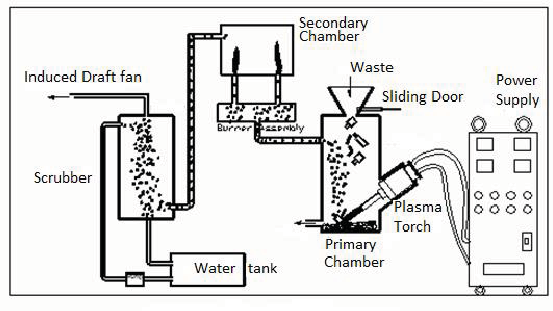
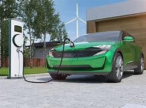
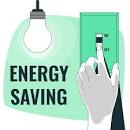

How to Preserve Our Earth
By : Anish Kodali
Project Description
This project is mainly about how we can help our earth. As you know our earth is facing one main problem, which is global warming. This project explains many ways for us to prevent global warming from damaging our planet. The reason why global warming is so dangerous is because it damages the atmosphere, the atmosphere is the only thing that prevents most of the sun's UV rays from hitting the earth. If the atmosphere were to keep being weakened by global warming, more of the sun's UV rays and asteroids could hit the earth's surface. If UV rays were to hit the surface of the earth it would make water evaporate faster making us run out of our supply faster. This is global warming and the effects that it has on our earth's atmosphere. This project has ways made up to show and prevent global warming that will make our earth better for humans and other beings to reside in.
Project Demo
Littering is known to be of waste products that have been discarded incorrectly, without consent, at an unsuitable location. There is so much of littering that is happening around the world, but we can turn this negative into a positive. Plastic are mainly carbon and hydrogen, with the similar energy contents to fuels such as diesel. Plastics are mainly among the litter around the world. It is possible to convert plastics into useful forms of energy and chemicals for industry. The process to making this happen is known to be "cold plasma pyrolysis." Pyrolysis is a heating technique that breaks down organic compounds at temperatures between 400C and 650C in a low-oxygen setting. An example of the orangic compounds are plastic and other items which are mainly being thrown into landfills. These energies and chemicals used from the trash litter can be used to power cars and other things just like diesel. An example is the hydrogen car which is shown in our first example, Hydrogen cars are cars like electric cars but release water vapor and are way better for the enviornment. Along with hydrogen cars and cold plasma pyrolysis, there are other examples used to how we can stop global warming.
Example 1
The first example would be to use hydrogen cars. Hydrogen fuel cell vehicles use the same kind of electric motor as a battery powered vehicle to turn their wheels. Hydrogen fuel cell vehicles use the same kind of electric motor as a battery powered vehicle to turn their wheels. But instead of a large, heavy battery, it's powered by a fuel cell stack in which pure hydrogen passes through a membrane and is mixed with oxygen from the air to produce electricity that turns the wheels and water vapor. What this means is that a fuel-cell vehicle is technically a series hybrid, which is why they are sometimes classified as fuel-cell hybrid electric vehicles. This means that a fuel cell vehicle is a hybrid, which is why they are classified as fuel cell hybrid electrical vehicles.

Example 2
The second example for preventing global warming is to plant trees. There are many reasons to why you should plant trees, the main reason is because planting trees absorb the carbon dioxide and turn it into oxygen. This helps the atmosphere and the people since oxygen is a main component to our lives. Another reason of why we should plant trees is because not only does it help the atmosphere but it also helps the environment so many animals and plants could have environments in the areas of the trees.

Example 3
The third and final example that we can use to preserve our earth is preserving electricity and power in our homes. Preserving electricity in our homes would be helpful due to it mainly being produced by coal, and other resources that could harm our earth’s atmosphere. If we were to preserve electricity, we can be able to preserve our earth. Saving electricity reduces the pollution that is emitted from non-renewable sources of energy. Preserving our energy and electricity will help our earth in many ways.
